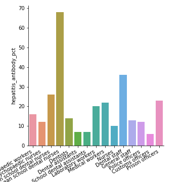
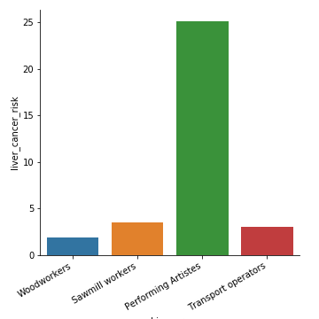

In your organisation, you are responsible for health and well-being for the employees. A newly appointed employee, whom you do not know, seeks your appointment and tells you that he suffers from fear of heights. What question would you ask him?
In which, sicker workers are likely to stay home and healthier workers are over-represented in the worker pool; This leads to lower estimation of diseases when workplace surveys are conducted
You find out about disease prevalence in workplaces using surveillance
You must know what toxins are present in the workplace to understand possible health conditions that can arise in the workplace
Your cohort of workers are readily identifiable and you can follow them over time
You can identify first cases of diseases among the workers
occupation
hepatitis_antibody_pct
0
Psychopaedic workers
16
1
Psychopaedic nurses
12
2
European school dental nurses
26
3
Non-european school dental nurses
68
4
Dentists
14
Risk of hepatitis among different professional groups

Risk of liver cancer among different professional groups

Haddon Matrix
Factor phases
Human factor
Agent
Physical Env
Sociocultural Env
Pre-event
Event
Post-event
Application of Haddon Matrix to a motor vehicle accident